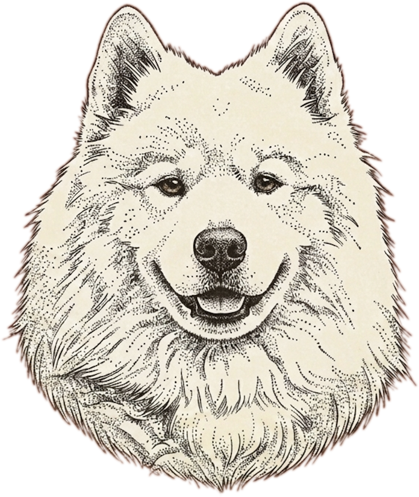

TokenDog sits between your coding agent and the model, finds the tool_result blocks in every request, and shrinks them before the tokens are billed — keeping every answer-bearing fact, and proving it does.
$ td gain --since 1d TokenDog Savings (last 24h) ══════════════════════════════════════════════════════════ Total commands: 142 (proxy: 138, hook: 4) Saved: 48.2KB (12,403 tokens, 18.7%) Cost saved: $0.19 (per-model rates, cl100k)
Token prices keep falling. The durable win is spending your context budget on signal instead of git status noise.
git · kubectl · terraform · gh · jq · npm · test runners — structural noise stripped, signal kept verbatim.
Stash huge outputs, send a preview, let the model pull the original back on demand via MCP. Nothing is lost, only deferred.
Re-read the same file? The duplicate collapses to a one-line back-reference — it's verbatim above already.
The MITM proxy (zero client config) or td gateway — explicit base_url, no CA cert. Security-team friendly.
td eval shows deterministically that no answer-bearing fact is ever dropped. Numbers, not vibes.
td gain prices real per-model savings; td replay runs the counterfactual on your own history.

How it worksIt MITMs only your provider's API host — every other CONNECT is tunnelled through untouched.
Cache-safe by construction. Only the last tool_result is filtered — the part the prompt cache hasn't hashed yet. TokenDog is complementary to prompt caching, never a competitor to it.
Every filter holds the universal Guard invariant: output bytes ≤ input bytes. If filtering would lose data, the original passes through unchanged.
| Tool | Strategy | Reduction |
|---|---|---|
| git status/log/diff | Compact format, drop index metadata | 30–85% |
| gh pr/issue/run | Column normalization, JSON compaction | 30–60% |
| kubectl get/describe | Table compaction, blank-line collapse | 20–60% |
| terraform plan/apply | Drop refresh spam, keep diffs verbatim | 40–70% |
| find | Group by directory, skip .git / node_modules | 70–95% |
| pytest/jest/go test | Summary on pass, verbatim on failure | 60–95% |
| aws/gcloud/az | Lossless JSON re-marshal, table normalize | 30–80% |
| jq, curl (JSON) | Lossless compaction, no indentation | 40–70% |
td setup wires cert, auto-start & envA small status-bar companion shows spend — today / month / lifetime — with TokenDog's savings alongside. Reads local data only.
Swift/AppKit app backed by td spend --json. Toggle launch-at-login from the menu.
cd macos/TokenDogBar ./build.sh --install
Cross-platform Go companion polling the same contract every 60s. Isolated cgo module.
cd tray go build -o tokendog-tray . ./tokendog-tray
Restart your AI client, then watch the savings roll in with td gain.
$ brew tap uttej-badwane/tokendog $ brew install tokendog $ td setup # cert + auto-start + proxy env, all wired # prefer no CA cert? skip the MITM entirely: $ td gateway --port 8099 --upstream https://api.anthropic.com $ ANTHROPIC_BASE_URL=http://127.0.0.1:8099 claude